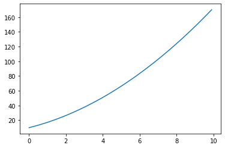

Sympy

Introducción
Hay dos sistemas de álgebra computarizada (CAS) notables para Python:
- SymPy: un módulo de Python que se puede utilizar en cualquier programa de Python, o en una sesión de IPython, que proporciona potentes funciones de CAS.
- Sage - Sage es un entorno CAS muy potente y con todas las funciones que tiene como objetivo proporcionar un sistema de código abierto que compita con Mathematica y Maple. Sage no es un módulo Python normal, sino un entorno CAS que utiliza Python como lenguaje de programación.
Sage es en algunos aspectos más poderoso que SymPy, pero ambos ofrecen una funcionalidad CAS muy completa. La ventaja de SymPy es que es un módulo Python normal y se integra bien con el portátil IPython.
Para comenzar a usar SymPy en un programa o cuaderno de Python, importe el módulo sympy:
Para obtener una salida con formato $\LaTeX $ atractiva, ejecute:
init_printing()
# or with older versions of sympy/ipython, load the IPython extension
#%load_ext sympy.interactive.ipythonprinting
# or
#%load_ext sympyprinting
Variables simbólicas
En SymPy necesitamos crear símbolos para las variables con las que queremos trabajar. Podemos crear un nuevo símbolo usando la clase Symbol:
\(\displaystyle \left(x + \pi\right)^{2}\)
sympy.core.symbol.Symbol
Podemos agregar suposiciones a los símbolos cuando los creamos:
False
\(\displaystyle \text{True}\)
Números complejos
La unidad imaginaria se denota "I" en Sympy.
\(\displaystyle 1 + i\)
\(\displaystyle -1\)
\(\displaystyle \left(i x + 1\right)^{2}\)
Numeros racionales
Hay tres tipos numéricos diferentes en SymPy: Real,Rational, ʻInteger`:
\(\displaystyle \frac{4}{5}\)
\(\displaystyle \frac{41}{20}\)
\(\displaystyle \frac{16}{25}\)
Evaluación numérica
SymPy usa una biblioteca para precisión artística como backend numérico, y tiene expresiones SymPy predefinidas para una serie de constantes matemáticas, como: pi, ʻe, ʻoo para infinito.
Para evaluar una expresión numéricamente podemos usar la función evalf (o N). Toma un argumento "n" que especifica el número de dígitos significativos.
\(\displaystyle 3.1415926535897932384626433832795028841971693993751\)
\(\displaystyle 9.8696 \left(0.31831 x + 1\right)^{2}\)
Cuando evaluamos numéricamente expresiones algebraicas, a menudo queremos sustituir un símbolo por un valor numérico. En SymPy lo hacemos usando la función subs:
\(\displaystyle \left(1.5 + \pi\right)^{2}\)
\(\displaystyle 21.5443823618587\)
Por supuesto, la función subs también se puede utilizar para sustituir símbolos y expresiones:
\(\displaystyle \left(a + 2 \pi\right)^{2}\)
También podemos combinar la evolución numérica de expresiones con matrices Numpy:

Sin embargo, este tipo de evolución numérica puede ser muy lenta, y hay una manera mucho más eficiente de hacerlo: use la función lambdify para" compilar "una expresión Sympy en una función que sea mucho más eficiente para evaluar numéricamente:
f = lambdify([x], (x + pi)**2, 'numpy') # the first argument is a list of variables that
# f will be a function of: in this case only x -> f(x)
La aceleración cuando se utilizan funciones lambdify en lugar de una evaluación numérica directa puede ser significativa, a menudo de varios órdenes de magnitud. Incluso en este ejemplo simple obtenemos una velocidad significativa:
16.9 ms ± 473 µs per loop (mean ± std. dev. of 7 runs, 100 loops each)
2.89 µs ± 48.3 ns per loop (mean ± std. dev. of 7 runs, 100000 loops each)
Manipulaciones algebraicas
Uno de los usos principales de un CAS es realizar manipulaciones algebraicas de expresiones. Por ejemplo, podríamos querer expandir un producto, factorizar una expresión o simplemente una expresión. Las funciones para realizar estas operaciones básicas en SymPy se muestran en esta sección.
Expandir y factorizar
Los primeros pasos en una manipulación algebraica
\(\displaystyle \left(x + 1\right) \left(x + 2\right) \left(x + 3\right)\)
\(\displaystyle x^{3} + 6 x^{2} + 11 x + 6\)
La función expand toma un número de argumentos de palabras clave que podemos decirle a las funciones qué tipo de expansiones queremos que se realicen. Por ejemplo, para expandir expresiones trigonométricas, use el argumento de palabra clave trig = True:
\(\displaystyle \sin{\left(a + b \right)}\)
\(\displaystyle \sin{\left(a \right)} \cos{\left(b \right)} + \sin{\left(b \right)} \cos{\left(a \right)}\)
Consulte help (expand) para obtener una explicación detallada de los distintos tipos de expansiones que pueden realizar las funciones de ʻexpand`.
Lo contrario, una expansión de producto es, por supuesto, factorización. El factor de una expresión en SymPy usa la función factor:
\(\displaystyle \left(x + 1\right) \left(x + 2\right) \left(x + 3\right)\)
Simplificar
El "simplificar" intenta simplificar una expresión en una expresión agradable, utilizando varias técnicas. También existen alternativas más específicas a las funciones simplify:trigsimp, powsimp,logcombine, etc.
Los usos básicos de estas funciones son los siguientes:
\(\displaystyle \left(x + 1\right) \left(x + 2\right) \left(x + 3\right)\)
\(\displaystyle 1\)
\(\displaystyle \frac{1}{\tan{\left(x \right)}}\)
Separados y juntos
Para manipular expresiones simbólicas de fracciones, podemos usar las funciones apart y together:
apart
\(\displaystyle \frac{1}{\left(a + 1\right) \left(a + 2\right)}\)
\(\displaystyle - \frac{1}{a + 2} + \frac{1}{a + 1}\)
together
\(\displaystyle \frac{1}{a + 3} + \frac{1}{a + 2}\)
\(\displaystyle \frac{2 a + 5}{\left(a + 2\right) \left(a + 3\right)}\)
Simplificar generalmente combina fracciones pero no factoriza:
\(\displaystyle \frac{2 a + 5}{\left(a + 2\right) \left(a + 3\right)}\)
Cálculo
Además de las manipulaciones algebraicas, el otro uso principal de CAS es hacer cálculo, como derivadas e integrales de expresiones algebraicas.
Diferenciación
La diferenciación suele ser sencilla. Utilice la función diff. El primer argumento es la expresión para tomar la derivada y el segundo argumento es el símbolo por el cual tomar la derivada:
\(\displaystyle \left(x + \pi\right)^{2}\)
\(\displaystyle 4 \left(x + \pi\right)^{3}\)
Para derivados de orden superior podemos hacer:
\(\displaystyle 12 \left(x + \pi\right)^{2}\)
\(\displaystyle 12 \left(x + \pi\right)^{2}\)
Para calcular la derivada de una expresión multivariante, podemos hacer:
\(\frac{d^3f}{dxdy^2}\)
\(\displaystyle - x \left(x y \cos{\left(x y \right)} + 2 \sin{\left(x y \right)}\right)\)
Integración
La integración se realiza de manera similar:
\(\displaystyle \sin{\left(x y \right)} + \cos{\left(y z \right)}\)
\(\displaystyle x \cos{\left(y z \right)} + \begin{cases} - \frac{\cos{\left(x y \right)}}{y} & \text{for}\: y \neq 0 \\0 & \text{otherwise} \end{cases}\)
Al proporcionar límites para la variable de integración, podemos evaluar integrales definidas:
\(\displaystyle 2 \cos{\left(y z \right)}\)
y también integrales impropias:
\(\displaystyle \sqrt{\pi}\)
Recuerde, oo es la notación SymPy para infinito.
Sumas y productos
Podemos evaluar sumas y productos usando las funciones: 'Suma'
\(\displaystyle \sum_{n=1}^{10} \frac{1}{n^{2}}\)
\(\displaystyle 1.54976773116654\)
\(\displaystyle 1.64493406684823\)
Los productos funcionan de la misma manera:
\(\displaystyle \prod_{n=1}^{10} n\)
Límites
Los límites se pueden evaluar utilizando la función limit. Por ejemplo,
\(\displaystyle 1\)
Podemos usar limit para verificar el resultado de la derivación usando la función diff:
\(\displaystyle \sin{\left(x y \right)} + \cos{\left(y z \right)}\)
\(\displaystyle y \cos{\left(x y \right)}\)
\(\displaystyle \frac{\mathrm{d}f(x,y)}{\mathrm{d}x} = \frac{f(x+h,y)-f(x,y)}{h}\)
\(\displaystyle y \cos{\left(x y \right)}\)
Podemos cambiar la dirección desde la que nos acercamos al punto límite usando el argumento dir:
\(\displaystyle \infty\)
\(\displaystyle -\infty\)
Serie
La expansión de la serie también es una de las características más útiles de un CAS. En SymPy podemos realizar una expansión en serie de una expresión usando la función series:
\(\displaystyle 1 + x + \frac{x^{2}}{2} + \frac{x^{3}}{6} + \frac{x^{4}}{24} + \frac{x^{5}}{120} + O\left(x^{6}\right)\)
De forma predeterminada, expande la expresión alrededor de \(x = 0\), pero podemos expandir alrededor de cualquier valor de \(x\) al incluir explícitamente un valor en la llamada a la función:
\(\displaystyle e + e \left(x - 1\right) + \frac{e \left(x - 1\right)^{2}}{2} + \frac{e \left(x - 1\right)^{3}}{6} + \frac{e \left(x - 1\right)^{4}}{24} + \frac{e \left(x - 1\right)^{5}}{120} + O\left(\left(x - 1\right)^{6}; x\rightarrow 1\right)\)
Y podemos definir explícitamente en qué orden se debe realizar la expansión de la serie:
\(\displaystyle e + e \left(x - 1\right) + \frac{e \left(x - 1\right)^{2}}{2} + \frac{e \left(x - 1\right)^{3}}{6} + \frac{e \left(x - 1\right)^{4}}{24} + \frac{e \left(x - 1\right)^{5}}{120} + \frac{e \left(x - 1\right)^{6}}{720} + \frac{e \left(x - 1\right)^{7}}{5040} + \frac{e \left(x - 1\right)^{8}}{40320} + \frac{e \left(x - 1\right)^{9}}{362880} + O\left(\left(x - 1\right)^{10}; x\rightarrow 1\right)\)
La expansión de la serie incluye el orden de la aproximación, lo cual es muy útil para realizar un seguimiento del orden de validez cuando hacemos cálculos con expansiones de la serie de diferente orden:
\(\displaystyle 1 - \frac{x^{2}}{2} + \frac{x^{4}}{24} + O\left(x^{5}\right)\)
\(\displaystyle x + O\left(x^{2}\right)\)
\(\displaystyle x + O\left(x^{2}\right)\)
Si queremos deshacernos de la información del error, podemos usar el método removeO:
\(\displaystyle \frac{x^{5}}{24} - \frac{x^{3}}{2} + x\)
Pero tenga en cuenta que esta no es la expansión correcta de $ \cos(x) \sin(x)$ a $ 5 $ ésimo orden:
\(\displaystyle x - \frac{2 x^{3}}{3} + \frac{2 x^{5}}{15} + O\left(x^{6}\right)\)
Álgebra lineal
Matrices
Las matrices se definen usando la clase Matrix:
\(\displaystyle \left[\begin{matrix}m_{11} & m_{12}\\m_{21} & m_{22}\end{matrix}\right]\)
\(\displaystyle \left[\begin{matrix}b_{1}\\b_{2}\end{matrix}\right]\)
Con las instancias de la clase Matrix podemos hacer las operaciones habituales de álgebra matricial:
\(\displaystyle \left[\begin{matrix}m_{11}^{2} + m_{12} m_{21} & m_{11} m_{12} + m_{12} m_{22}\\m_{11} m_{21} + m_{21} m_{22} & m_{12} m_{21} + m_{22}^{2}\end{matrix}\right]\)
\(\displaystyle \left[\begin{matrix}b_{1} m_{11} + b_{2} m_{12}\\b_{1} m_{21} + b_{2} m_{22}\end{matrix}\right]\)
Y calcular determinantes e inversas, y similares:
\(\displaystyle m_{11} m_{22} - m_{12} m_{21}\)
\(\displaystyle \left[\begin{matrix}\frac{m_{22}}{m_{11} m_{22} - m_{12} m_{21}} & - \frac{m_{12}}{m_{11} m_{22} - m_{12} m_{21}}\\- \frac{m_{21}}{m_{11} m_{22} - m_{12} m_{21}} & \frac{m_{11}}{m_{11} m_{22} - m_{12} m_{21}}\end{matrix}\right]\)
Resolver ecuaciones
Para resolver ecuaciones y sistemas de ecuaciones podemos usar la función resolver:
\(\displaystyle \left[ -1, \ 1\right]\)
\(\displaystyle \left[ - i \sqrt{- \frac{1}{2} + \frac{\sqrt{5}}{2}}, \ i \sqrt{- \frac{1}{2} + \frac{\sqrt{5}}{2}}, \ - \sqrt{\frac{1}{2} + \frac{\sqrt{5}}{2}}, \ \sqrt{\frac{1}{2} + \frac{\sqrt{5}}{2}}\right]\)
Sistema de ecuaciones:
\(\displaystyle \left\{ x : 1, \ y : 0\right\}\)
En cuanto a otras expresiones simbólicas:
\(\displaystyle \left\{ x : \frac{a}{2} + \frac{c}{2}, \ y : \frac{a}{2} - \frac{c}{2}\right\}\)